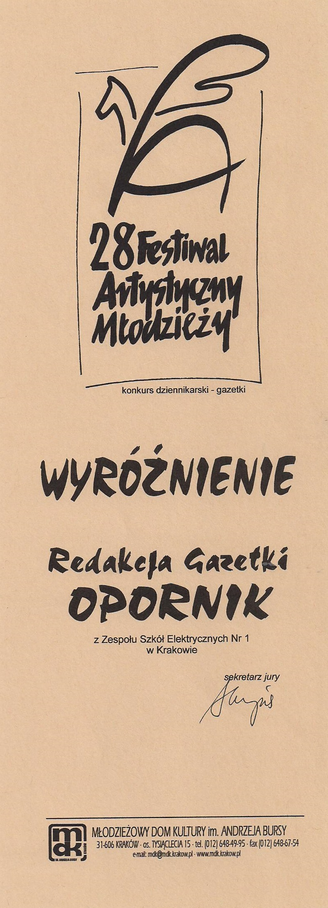
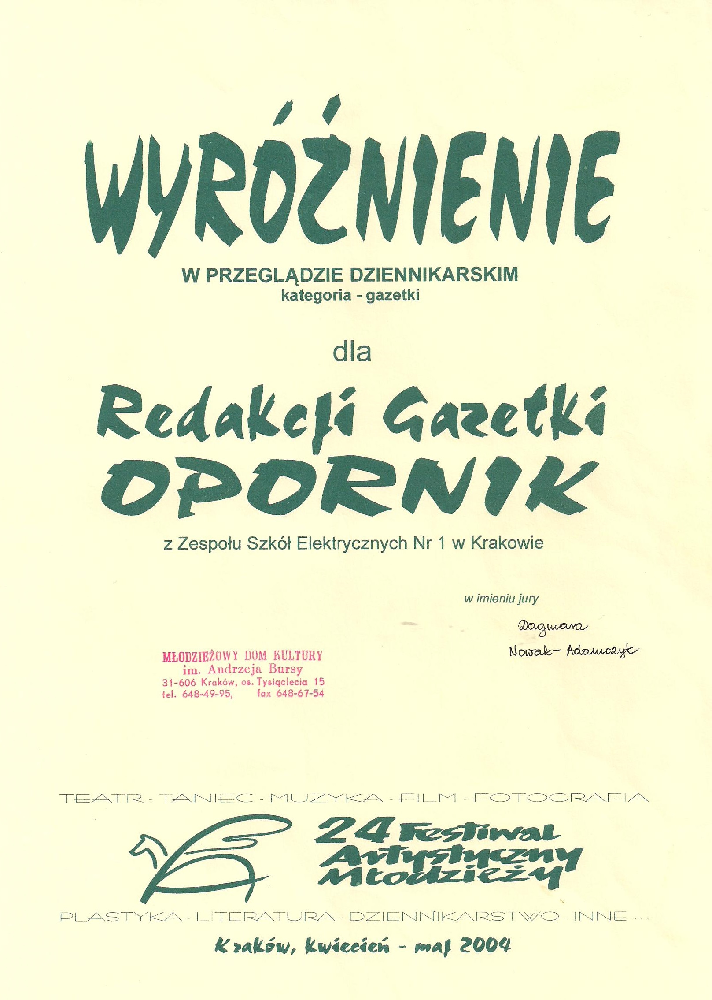
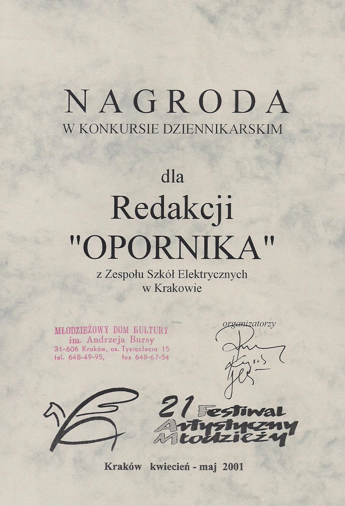
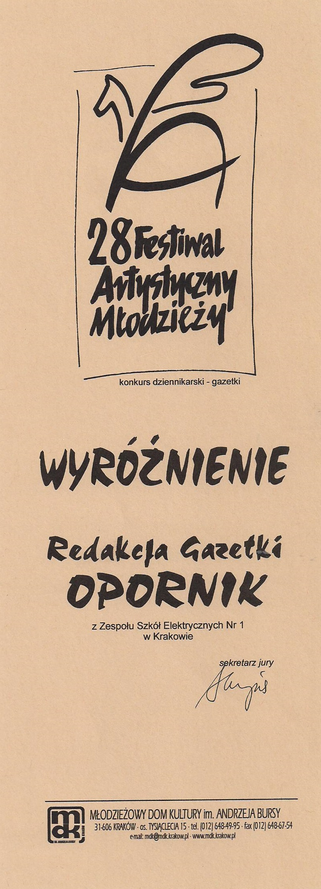
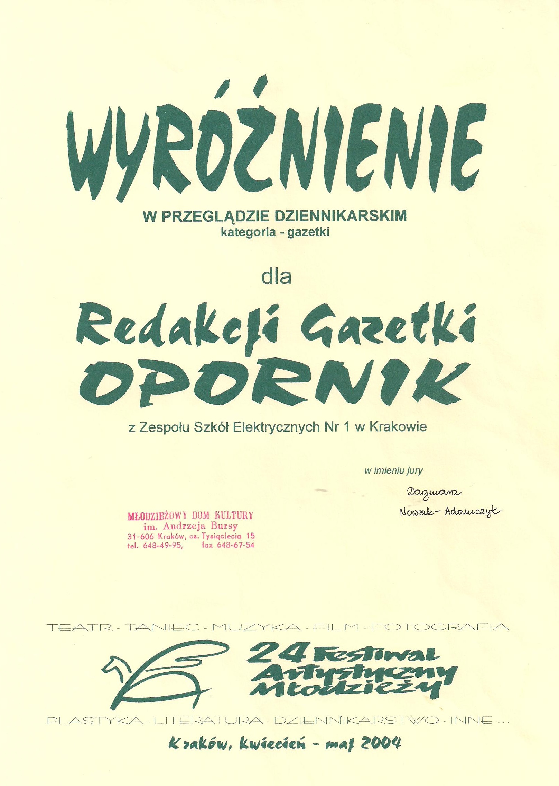
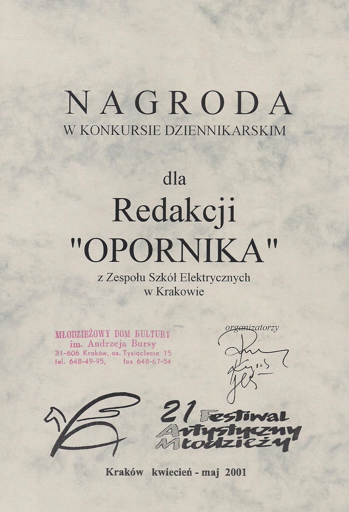

2018
XXXVIII Małopolski Festiwal Artystyczny Młodzieży Kraków, 2018 r. - wyróżnienie
2017
XXXVII Małopolski Festiwal Artystyczny Młodzieży Kraków, 2017 r. - nagroda (jedyna jaką przyznano)
Konkurs gazetek szkolnych szkół ponadgimnazjalnych Krakowskiej Akademii Samorządności 2016/2017 - wyróżnienie
2016
XXXVI Małopolski Festiwal Artystyczny Młodzieży Kraków, 2016 r. - II miejsce
Konkurs gazetek szkolnych szkół ponadgimnazjalnych Krakowskiej Akademii Samorządności 2015/2016 - III miejsce oraz wyróżnienie za cykl rozmów z absolwentami
2015
XXXV Małopolski Festiwal Artystyczny Młodzieży Kraków, 2015 r. - wyróżnienie
Wyróżnienie dla Jacka Windaka w konkursie gazetek szkolnych szkół ponadgimnazjalnych Krakowskiej Akademii Samorządności 2014/2015
2014
XXXIV Małopolski Festiwal Artystyczny Młodzieży Kraków, 2014 r. - wyróżnienie
Małopolski Konkurs na Gazetkę Szkolną „Prasówka” 2014 - II miejsce
III miejsce w Konkursie Plastycznym Małopolskiego Festiwalu Artystycznego Młodzieży dla Dominika Nowaka 2014 r.
Konkurs gazetek szkolnych szkół ponadgimnazjalnych Krakowskiej Akademii Samorządności 2013/2014 - II miejsce
Wyróżnienie dla redakcji czasopisma "Opornik" za cykl artykułów "Zagnij księdza"
2013
XXXIII Małopolski Festiwal Artystyczny Młodzieży Kraków, 2013 r. - I nagroda
Konkurs gazetek szkolnych szkół ponadgimnazjalnych Krakowskiej Akademii Samorządności 2012/2013 - I miejsce
2012
XXXII Małopolski Festiwal Artystyczny Młodzieży Kraków, 2012 r.- I nagroda
II miejsce 2012 r. dla Damiana Grzejdziaka w Konkursie Literackim Małopolskiego Festiwalu Artystycznego Młodzieży
Konkurs gazetek szkolnych szkół ponadgimnazjalnych Krakowskiej Akademii Samorządności 2011/2012 - I miejsce
2011
XXXI Małopolski Festiwal Artystyczny Młodzieży Kraków, 2011 r. - II nagroda
Wyróżnienie 2011 r. dla Damiana Grzejdziaka w Konkursie Literackim Małopolskiego Festiwalu Artystycznego Młodzieży
2008
XXVIII Festiwal Artystyczny Młodzieży Kraków, 2008 r. - wyróżnienie
2004
XXIV Festiwal Artystyczny Młodzieży Kraków, 2004 r. - wyróżnienie
2001
XXI Festiwal Artystyczny Młodzieży Kraków, 2001 r. - nagroda
 




